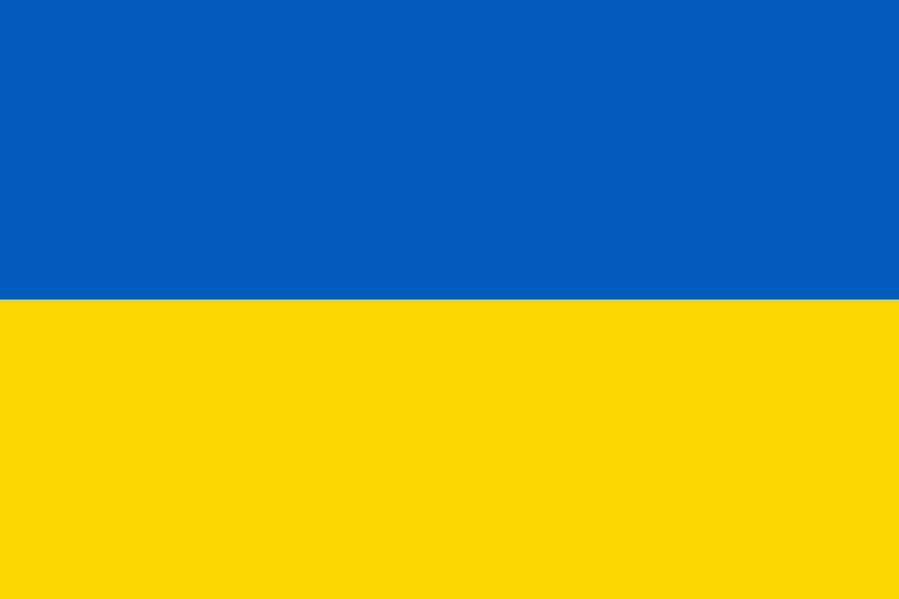

| Nr. | Name | pikcture | |
|---|---|---|---|
| 1 | Украина Украи́на (укр. Україна [ukrɑˈjinɑ]) — государство в Восточной и частично Центральной Европе. Общая площадь[c] — 603 549 км². Население по оценкам Государственной службы статистики Украины на 1 января 2022 года — 40 997 699 постоянных жителей и 41 167 336 человек наличного населения[13]. Занимает 34-е место в мире по численности населения. Украина является первым по размеру территории европейским государством, целиком находящимся в Европе. Столица — город Киев. Государственный язык — украинский. |
 | |
| 2 | Манявский водопад (Ивано-Франковская область) Один из крупнейших водопадов Украины. Его высота – около 20 метров. Вода ледяная, но искупаться у подножия в небольшом озерце можно, тем более, что, по рассказам местных, эти воды имеют целебные и омолаживающие свойства. Правда, по слухам, здесь водятся еще и мавки, и другие лесные жители. А еще здесь очень красивая природа – густые сочно-зеленые заросли папортника и мха, огромные старые ели и чистый воздух. Будто здесь никогда не ступала нога человека и все вокруг именно такое, каким задумала матушка-природа |
||
| 3 | Харьковский национальный академический театр оперы и балета имени Н. Лысенко (ХНАТОБ) — первый украинский стационарный оперный театр. Здание театра имеет в основе своеобразный проект, который его авторы во главе с Сергеем Миргородским, главным архитектором Украинской ССР, проектировали не для Харькова, а для Киева (но Киев от него отказался). Здание строилось чрезвычайно долго: 21 год (1970—1991). Архитектура здания построена на контрасте большой нависающей "плиты" двух верхних этажей и сложной пластики входных вестибюлей, фойе и других помещений нижних этажей. Реальная стоимость строительства здания превысила сметную стоимости театра в четыре раза. | ||
| 4 | Карпати) — горная система в Восточной Европе на территории Чехии, Словакии, Украины, Венгрии, Польши, Румынии, Сербии и частично Австрии (Хундсхаймер-Берге у Хайнбурга-на-Дунае и Нидеростеррайхише Инзельбергшвелле у Мистельбаха) В эпоху Античности и Средневековья Карпаты именовались Сарматскими горами. Также назывались Угорскими (Венгерскими. | ||
| 5 | Одесса — город и община в Северном Причерноморье на юго-западе Украины. Административный центр Одесской области и Одесского района. Главная военно-морская база Военно-морских сил Украины. Город-герой. Третий по населению город Украины. Численность населения на 1 января 2021 года составила 1 015 826 человек, в пределах агломерации проживает свыше 1,2 млн человек. Расположена на берегу Одесского залива. Крупный морской торговый порт. Развиты туризм и торговля, промышленность (металлообработка и машиностроение, производство лекарств и продуктов питания). | ||
| 6 | Киев — столица и крупнейший город Украины. Расположен на реке Днепр, является центром Киевской агломерации. Отдельная административно -территориальная единица Украины; культурный, политический, социально-экономический, транспортный, научный и религиозный центр страны. Киев — административный центр Киевской области, хотя и не входит в её состав, имея особый правовой статуc. . Расположен на севере Украины. Седьмой по населению город Европы после Стамбула, Лондона, Берлина и Мадрида. Логотип Киева, в переводе — «город, где всë начинается» За свою историю Киев был столицей полян, Киевской Руси, Киевского княжества, Украинской Народной Республики, Украинской Народной Республики Советов, Украинской державы, Украинской Советской Социалистической Республики, а с 1991 года — независимой Украины. |